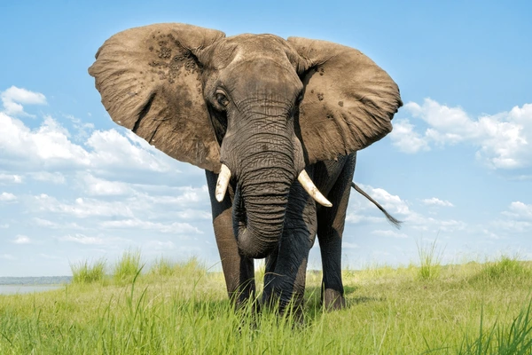

Elefante africano (Loxodonta africana)
su habitat:Sabana africana, selvas y bosques tropicales con abundante vegetación.
Alimentacion:Herbívoro. Consume hojas, ramas, hierbas, frutas y corteza de árboles.
Dato curioso: Tiene una excelente memoria y es capaz de recordar lugares con agua incluso después de varios años.
Informacion general: Es el mamífero terrestre más grande. Posee una trompa fuerte y versátil que le sirve para alimentarse, respirar, comunicarse y bañarse.
Vive en manadas organizadas dirigidas por una hembra adulta.
Delfín común (Delphinus delphis)
su habitat:Océanos templados y tropicales, especialmente cerca de las costas.
Alimentacion:Carnívoro. Se alimenta de peces, calamares y crustáceos, que caza en grupo usando estrategias coordinadas.
Dato curioso: Los delfines duermen con un solo hemisferio del cerebro activo para seguir respirando y mantenerse alerta ante posibles peligros.
Informacion general: Mamífero marino muy inteligente y sociable. Su cuerpo es aerodinámico y puede alcanzar grandes velocidades. Se comunica mediante sonidos y saltos fuera del agua.

Capibara (Hydrochoerus hydrochaeris)
Hábitat: Zonas húmedas, orillas de ríos y pantanos de América del Sur.
Alimentación: Herbívoro. Se alimenta de pastos, plantas acuáticas y cortezas tiernas.
Dato curioso: Es el roedor más grande del mundo y puede permanecer sumergido durante varios minutos para esconderse.
Información general: Vive en grupos familiares cerca del agua. Tiene patas parcialmente palmeadas y una naturaleza muy sociable.
Murciélago frugívoro (Artibeus jamaicensis)
Hábitat: Bosques tropicales y zonas rurales de América Central y del Sur.
Alimentación: Frugívoro. Se alimenta de frutas, especialmente higos, y ayuda a dispersar semillas.
Dato curioso: Se orienta por ecolocalización, emitiendo sonidos que rebotan en los objetos para ubicarse en la oscuridad.
Información general: Es un mamífero volador esencial para la regeneración del bosque. No choca con obstáculos aunque vuele a gran velocidad.

Puma (Puma concolor)
Hábitat: Montañas, bosques y praderas de América, desde Canadá hasta el sur de Chile.
Alimentación: Carnívoro. Se alimenta de ciervos, roedores y otros mamíferos medianos.
Dato curioso: Puede saltar hasta 5 metros de altura y emitir rugidos silenciosos parecidos a silbidos o maullidos fuertes.
Información general: Es un felino ágil y solitario. Tiene un papel clave en el equilibrio ecológico como depredador tope.